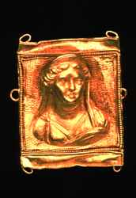
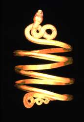

Ancient Gold: Jewelry from the Dallas Museum of Art
November 21, 1998 - March 7, 1999
Dayton Hudson Gallery
Admission: $5 adults; $3.75 seniors and students; free for children 12 and under, members, Thursdays 5-9 p.m. and Sunday, January 24, 1999
|  | |
|
Treasured and revered above all metals, gold has represented wealth and power since ancient times. Both beautiful and rare, the precious metal is endowed with great value. Because gold is easily worked and virtually indestructible, ancient goldsmiths transformed it skillfully into magnificent jewelry. These splendid objects have survived to tell us about the artists who created them and the people who wore and were buried with them.
A collection of 105 superb pieces of gold jewelry, dating from the 7th Century B.C. to the 3rd Century AD, will be displayed beginning November 21. The exhibition, Ancient Gold: Jewelry from the Dallas Museum of Art, can be seen in the Dayton Hudson Gallery through March 7, 1999. Visitors will discover bracelets, brooches, earrings, pendants, necklaces and rings - all crafted from gold and many embellished with precious and semi-precious stones, pate de verre and enamel.
Assembled between the 1930s and the 1960s by Swiss collector, Dr. Athos Moretti, the Dallas collection of Greek, Etruscan, Roman and Near Eastern jewelry is unsurpassed in quality, style and workmanship. The sophisticated aesthetic sense and technical mastery of ancient goldsmiths are evident in the objects in this exhibition. Working only with basic tools, they employed a wide variety of techniques, including repousse, stamping and punching, granulation and filigree, that are still being used today. The "miniature sculptures" created by these artists reflected the styles of larger sculptures of the time. Because it was customary to bury gold ornaments with the dead, many of them survived, making it possible to trace the development of ancient jewelry styles in great detail.
|  | |
|
In addition to ornaments displayed as signs of wealth and power, gold jewelry was also used for religious, magical or symbolic reasons by ancient people. Earring designs representing Aphrodite and Eros were worn to evoke desire, lions were symbols of fertility and royal power, and snakes were a form of protection. Some objects, such as the Etruscan fibulas or garment fasteners, were both decorative and practical.
The largest part of the collection is Greek in origin. The practice of melting down and reusing gold from unwanted jewelry not withstanding, a large amount of Greek jewelry has survived. It was found in graves and sanctuaries, mostly in the area of the wealthy city-states of southern Italy and Sicily that were settled by the Greeks as early as the 9th century B.C.
Among the oldest pieces in the exhibition are three spectacularly intricate
pieces - two bracelets and a pair of earrings - from the Near East, the
area from the eastern Mediterranean to Persia.